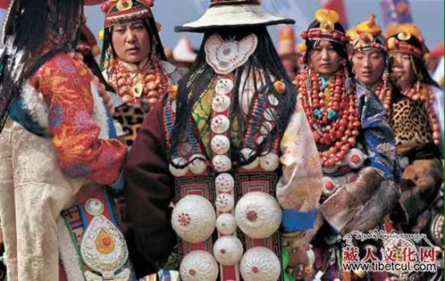

腰饰
腰饰
在谈论西藏传统服饰文化，特别是提及佩饰时，人们总是把目光聚集在藏族同胞佩戴的金银、珊瑚、蜜蜡等首饰上，常常会忽略藏装的必备之物——腰带。藏族腰带装饰艺术的独特风格，其实也是藏族装饰艺术中的一朵奇葩。藏式腰带这一民间艺术的载体，还同时承担着传统民间民俗文化传承的重任，藏族人腰带的编织、佩戴，也一辈一辈传至子子孙孙。

藏式腰带最早是手工编织的，一般选用棉、丝、毛等材料手工纺织而成。由于材料
与工艺的影响，一般只能编织出等格直线，再运用各色线进行造型，织成各种大小不
一的方块图案。这些图案充分利用纺织造型的特性，远远看去颇有立体的力度感。
藏式腰带上，除挂有随风飘曳的丝绸腰带、精美镶嵌的装饰品外，还可以挂上各种精制的具有装饰作用的生活用具。在日喀则，有些男子身上会佩戴腰刀、弓箭，甚至
品菜用的筷子等等。那些护身腰刀，柄鞘饰有白银、鎏金或宝鲨等，在阳光下熠熠发光，煞是好看。而那些作为生活用具的小刀，即通常所说的“藏刀”，男女均戴，挂
于腰带右侧。除藏刀外，有些妇女腰带上还系有精致的装针筒。为引火方便，还系有火镰夹，内装有火石和引火的绒艾，必备的是钱包和各种精美的奶钩。藏族同胞和门
巴族同胞的服饰上多戴佛珠，依靠丰富的矿产资源，他们腰间挂有银饰和铜饰的品种形式繁多，走动时也会发出有节奏的声响。
腰带在一些地方，不仅具有装饰作用，也有非常现实的用途。例如在古代，四川部分地方还流行走婚，腰带则成为一种有特殊涵义的物品。当丈夫把自己的腰带放在房
门上，则表示他是这个家庭的男主人，不用言说，其他看到的人就明白，便不会再来打扰。而在节日里，藏族同胞们纷纷戴上最精美的腰带，挂上各色什锦囊，共同组成
藏装腰带上最绚丽的色彩，在阳光下载歌载舞，摇曳生姿。那时，美丽的腰带又成为了藏族同胞关于美、关于生活的特殊展示。